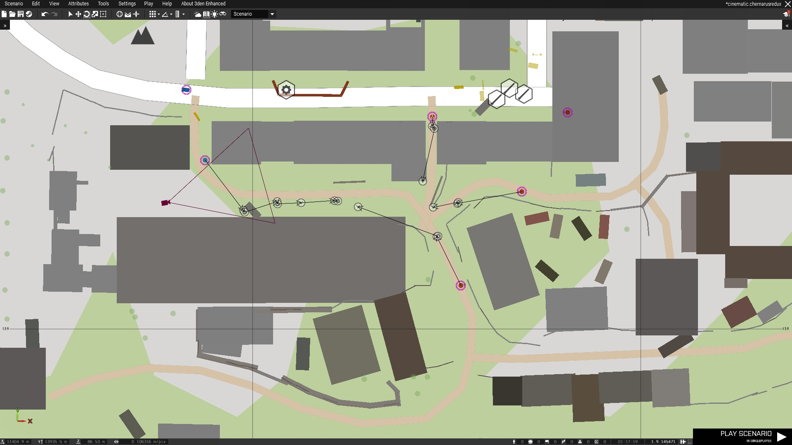
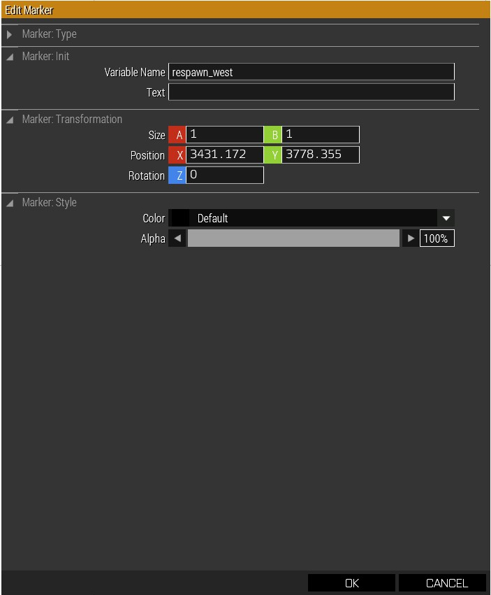

Introducing Mission Scripting


Adding Objectives
A fundamental part of a working mission is having objectives directing the player along a set path of instructions until they complete the mission. All of the available objectives in the editor are under the footprint icon in the Assets Menu.
There are a wide array of objectives available to the creator including but not limited to, move to location, eliminate, search and destroy, defend, and capture. Each of these has different variables and conditions depending on what the objective is.
For example a unit ID can be linked to an elimination objective so neutralizing that specific unit will complete the objective. It can also be done with the AI giving them specific objectives to counter what a player might do.
Adding Events
Events or triggers are what drive the mission forward after the player completes an objective. With triggers the creator can end the mission, assign a new objective, start an event, or make changes to the game logic. A trigger can be linked to any objective or unit and has a scripting input to tell the game what happens when it is triggered.
In the case of the cinematic triggers were used to animate enemies when they moved to a spot or enabled the enemies to take damage when the player moved to a certain location. In missions triggers are especially useful for coordinating enemy action with the players progress. If a player is told to capture a point, a defend objective can be assigned along with a trigger to tell the AI to attack that point.
Triggers can also be used to create events like simulating a vehicle being disabled or a weather event.
Controlling the AI
Triggers can also be used to control the AI from telling them to move to controlling the logic of AI. Each unit can be assigned a unique ID which can then be referenced in the various scripts of the game. Scripting commands are very powerful when used with triggers and are great for creating fully animated cutscenes. When a trigger is activated a creator can play puppet master over the AI with scripts telling them where to move and what animations to play.
Triggers can also be used to enhance game play by changing the skill of the AI mid combat, turning parts of the AI off, or toggling damage conditions on or off to protect a NPC or player until they need to be in danger.
That is a very useful ability with a game like ARMA where it is very easy for a player to accidentally die.